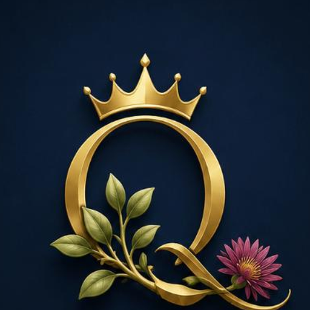

Queens Bellybutton · master logo + favicon pack
v5.9 · pipeline ejecutado · 9 archivos en branding/favicon/ + 7 en branding/master/ + SVG vectorizado experimental.
Hero · imagen completa (uso landing, PDFs, pitch deck)

Isotipo cuadrado (base de favicon + PWA)

Favicons pequeños · prueba real en pestaña
Así se verán en la barra de pestañas del navegador (a tamaño real). Si la flor se pierde a 16 px, es lo esperado — por eso el favicon.svg usa la versión simplificada Q+corona (opción A pura).
Comparativa · PNG IA vs SVG vectorizado vs SVG fallback simplificado
PNG IA (imagen original)
SVG vectorizado (experimental)
Generado · 147 KB tras svgo · vtracer con splines. El SVG es demasiado denso para mostrarlo aquí (~5000 paths) pero queda como fichero editable para futuros usos donde necesites vectorial puro.
branding/master/queens-isotipo-vectorized.svg
SVG fallback simplificado (favicon)

Cuándo se usa cada uno
PNG IA · landing, hero, PDFs, pitch deck, app icon móvil
SVG vectorizado · uso editable, retina, impresión grande
SVG fallback · favicon de la pestaña del navegador (16/32 px)
Generado por scripts/process-master-logo.py + generate-favicon-pack.py + vectorize-master-logo.py · v5.9